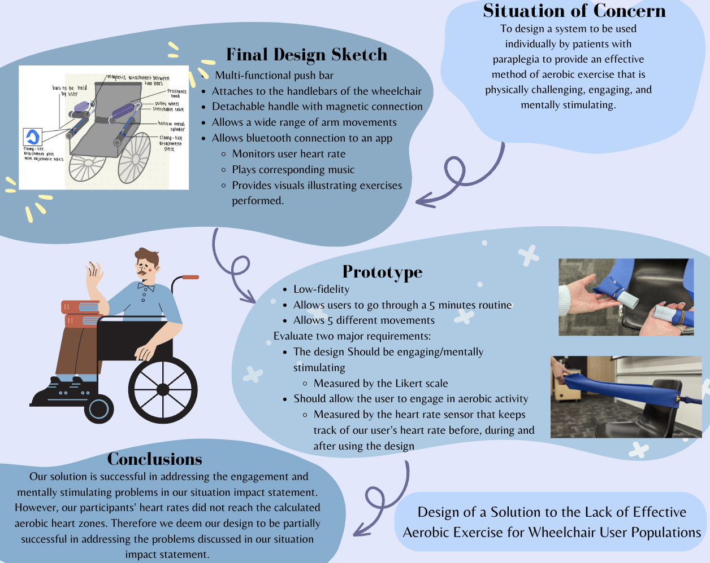

Exercise Equipment Prototyping
Company - Individual Projects
Duration - Fall 2022
Skills - Engineering Design, Design Prototyping
About the Project
This project aims to create exercise equipment alternative that is easily accessable for patients with paraplegia. The equipment focuses on providing arm exercise for the users.
About My Role
As a team member I am actively involved in all aspects of the project development. I was mainly focused on:
Final Design Summary

blah blah blah
Conclusion
blah blah blah